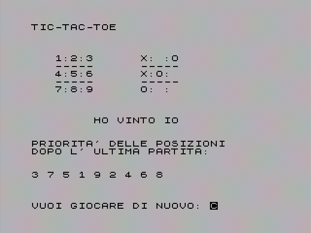

risorse | zx spectrum | tictactoe
È il classico gioco della tria.
Il programma conserva in un vettore l'ordine preferenziale delle proprie mosse: il calcolatore gioca sempre la prima casella libera tra quelle a priorità più alta. Al termine di una partita vittoriosa le caselle giocate vengono spostate verso l'alto, viceversa, in caso di sconfitta, vengono spostate verso il basso. A lungo andare, giocando contro un avversario intelligente, il programma dovrebbe privilegiare le caselle più strategiche, ovvero quella centrale seguita da quelle d'angolo.

Scarica il nastro virtuale tictactoe.tzx (5KB).
10 REM ***************
11 REM * TIC-TAC-TOE *
12 REM ***************
20 POKE 23658,8: GO SUB 1180
40 FOR J=1 TO 9
50 LET A(J)=32
60 NEXT J
70 FOR J=1 TO 5
80 LET D(J)=0
90 NEXT J
100 LET COUNT=0
110 LET R$=""
120 GO SUB 1070
129 REM
130 REM ********************
131 REM * CICLO PRINCIPALE *
132 REM ********************
133 REM
140 GO SUB 540
150 GO SUB 1070
160 GO SUB 870
170 IF R$<>"" THEN GO TO 240
180 GO SUB 980
190 GO SUB 1070
200 GO SUB 870
210 IF R$="" THEN GO TO 140
229 REM
230 REM **************
231 REM * FINE GIOCO *
232 REM **************
233 REM
250 GO SUB 1070
260 PRINT : PRINT
270 IF R$="W" THEN PRINT TAB 8;"HO VINTO IO": LET FLAG=-1
280 IF R$="L" THEN PRINT TAB 8;"HAI VINTO TU": LET FLAG =1
290 IF R$="D" THEN PRINT TAB 8;"E' PATTA": GO TO 430
299 REM
300 REM *********************
301 REM * AGGIORNA DATABASE *
302 REM *********************
303 REM
310 FOR B=1 TO 5
320 FOR J=2 TO 9
330 IF M(J)=D(B) THEN GO SUB 370
340 NEXT J
350 NEXT B
360 GO TO 430
369 REM
370 REM ***********************
371 REM * RIORDINA ELEMENTI *
372 REM * MATRICE DELLE MOSSE *
373 REM ***********************
374 REM
380 LET TEMP=M(J+FLAG)
390 LET M(J+FLAG)=M(J)
400 LET M(J)=TEMP
410 LET J=9
420 RETURN
430 PRINT : PRINT
435 FOR I=1 TO 100: NEXT I
440 PRINT "PRIORITA' DELLE POSIZIONI": PRINT "DOPO L' ULTIMA PARTITA:"
450 PRINT : PRINT
460 FOR J=1 TO 9
470 PRINT M(J);" ";
480 NEXT J
490 PRINT : PRINT
500 INPUT "VUOI GIOCARE DI NUOVO: "; LINE A$
515 IF A$="NO" OR A$="N" OR A$="no" OR A$="n" THEN STOP
520 GO TO 30
529 REM
530 REM *********************
531 REM * MOSSA AL COMPUTER *
532 REM *********************
533 REM
550 LET P=CODE ("O")
560 LET X=0
570 LET J=1
580 IF A(W(J))=A(W(J+1)) AND A(W(J+2))=32 AND A(W(J))=P THEN LET X=W(J+2): GO TO 750
590 IF A(W(J))=A(W(J+2)) AND A(W(J+1))=32 AND A(W(J))=P THEN LET X=W(J+1): GO TO 750
600 IF A(W(J+1))=A(W(J+2)) AND A(W(J))=32 AND A(W(J+1))=P THEN LET X=W(J): GO TO 750
610 IF J<21 THEN LET J=J+3: GO TO 580
620 IF P=CODE ("O") THEN LET P=CODE ("X"): GO TO 570
629 REM
630 REM ***********************
631 REM * NON CI SONO CASELLE *
632 REM * PER LA VITTORIA O *
633 REM * PER IL BLOCCO *
634 REM ***********************
635 REM
650 LET J=1
660 IF A(M(J))=32 THEN LET X=M(J): GO TO 750
670 IF J<10 THEN LET J=J+1: GO TO 660
680 LET H=0
690 LET H=H+1
700 LET X=INT (RND*9)+1: IF A(X)=32 THEN GO TO 750
710 IF H<100 THEN GO TO 690
720 LET R$="D"
730 RETURN
739 REM
740 REM *******************
741 REM * ESEGUE LA MOSSA *
742 REM *******************
743 REM
750 LET A(X)=CODE ("O")
770 LET COUNT=COUNT+1
780 LET D(COUNT)=X
790 LET FLAG=0
800 FOR J=1 TO 9
810 IF A(J)=32 THEN LET FLAG=1
820 NEXT J
830 IF FLAG=0 AND R$="" THEN LET R$="D"
839 REM
840 REM **********************
841 REM * TUTTE LE POSIZIONI *
842 REM * OCCUPATE : PATTA.. *
843 REM **********************
844 REM
850 RETURN
859 REM
860 REM **********************
861 REM * CONTROLLA SE VINTO *
862 REM **********************
863 REM
880 LET J=1
890 IF A(W(J))=32 THEN LET J=J+3
900 IF J>23 THEN RETURN
910 IF A(W(J))=A(W(J+1)) AND A(W(J))=A(W(J+2)) THEN GO TO 940
920 IF J<22 THEN LET J=J+3: GO TO 890
930 RETURN
940 IF A(W(J))=CODE ("O") THEN LET R$="W"
950 IF A(W(J))=CODE ("X") THEN LET R$="L"
960 RETURN
969 REM
970 REM *******************
971 REM * MOSSA ALL' UOMO *
972 REM *******************
973 REM
980 PRINT
990 PRINT
1000 INPUT "FAI LA TUA MOSSA: ";MOV
1020 IF MOV<1 OR MOV>9 THEN GO TO 1000
1030 IF A(MOV)<>32 THEN GO TO 1000
1040 LET A(MOV)=CODE ("X")
1050 RETURN
1059 REM
1060 REM *********************
1061 REM * STAMPA SCACCHIERA *
1062 REM *********************
1063 REM
1080 CLS
1085 PRINT "TIC-TAC-TOE"
1090 PRINT : PRINT : PRINT
1100 PRINT " 1:2:3 ";CHR$ (A(1));":";CHR$ (A(2));":";CHR$ (A(3))
1110 PRINT " ----- -----"
1120 PRINT " 4:5:6 ";CHR$ (A(4));":";CHR$ (A(5));":";CHR$ (A(6))
1130 PRINT " ----- -----"
1140 PRINT " 7:8:9 ";CHR$ (A(7));":";CHR$ (A(8));":";CHR$ (A(9))
1150 PRINT
1160 RETURN
1169 REM
1170 REM ********************
1171 REM * INIZIALIZZAZIONE *
1172 REM ********************
1173 REM
1190 CLS
1200 DIM A(9): DIM M(10): DIM W(24): DIM D(5)
1250 FOR J=1 TO 24
1260 READ W(J)
1270 NEXT J
1280 DATA 1,2,3,4,5,6,7,8,9
1290 DATA 1,4,7,2,5,8,3,6,9
1300 DATA 1,5,9,3,5,7
1309 REM
1310 REM *********************
1311 REM * DATABASE INIZIALE *
1312 REM *********************
1313 REM
1314 INPUT "VUOI INSERIRE PERSONALMENTE"'"IL TUO DATABASE INIZIALE ? "; LINE A$
1315 IF A$<>"SI" THEN GO TO 1320
1318 GO SUB 1060: FOR J=1 TO 9: PRINT "POSIZIONE N. ";(J);: INPUT "CASELLA NUMERO..";M(J): PRINT " CASELLA N. ";M(J): NEXT J: RETURN
1320 FOR J=1 TO 10
1330 READ M(J)
1340 NEXT J
1350 DATA 5,3,7,1,9,2,4,6,8,5
1360 RETURN
Pagina modificata l'8/11/2011